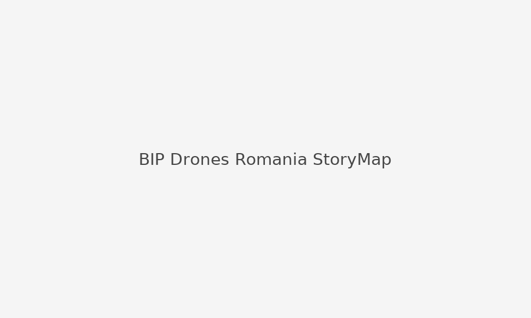

Course: Blended Intensive Programme: Drones for Environmental Sciences
International field school in Romania: UAV flight planning and data capture, orthomosaic and DSM generation, vegetation indices (NDVI / NDWI), and an ArcGIS StoryMap reporting on environmental monitoring of the study site.
